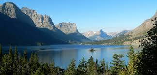
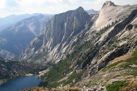

Glacier National Park

The High Sierras

Glacier National Park is oftern ovelooked by visitors to parks such as Yellowstone and Yosemite. However, this landscape, in northern Montana, is an absolute stunner. With soaring peaks, its namesake glaciers, and trademark bighorn sheep, it's time to visit.
When John Muir, the legendary founder of the Sierra Club, first stepped foot in this wilderness he said, "The mountains are calling and I must go". The high Sierras are one of the most remote and beautiful places in America.
If you travel Route 1, the "Ring Road," around Iceland - You can see it all. Start out in the geothermal lowlands around Reykjavik and progress eastward pass soaring waterfalls and black sand beaches. As you turn north and west, you enter the land of volcanoes and glaciers.